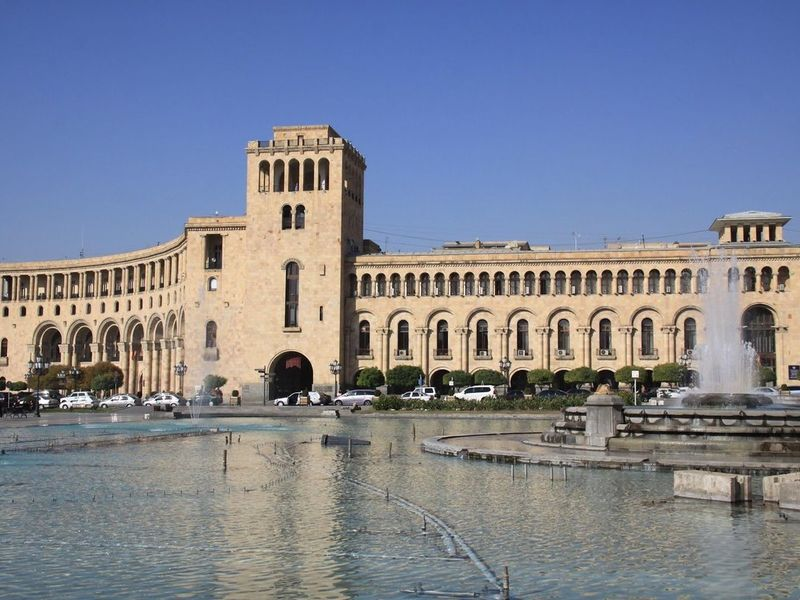
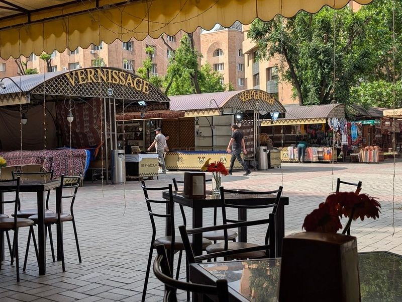
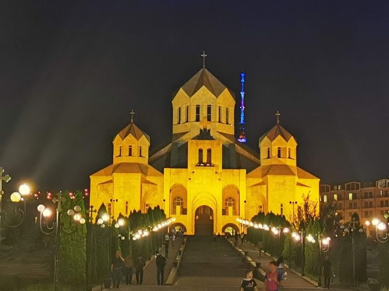
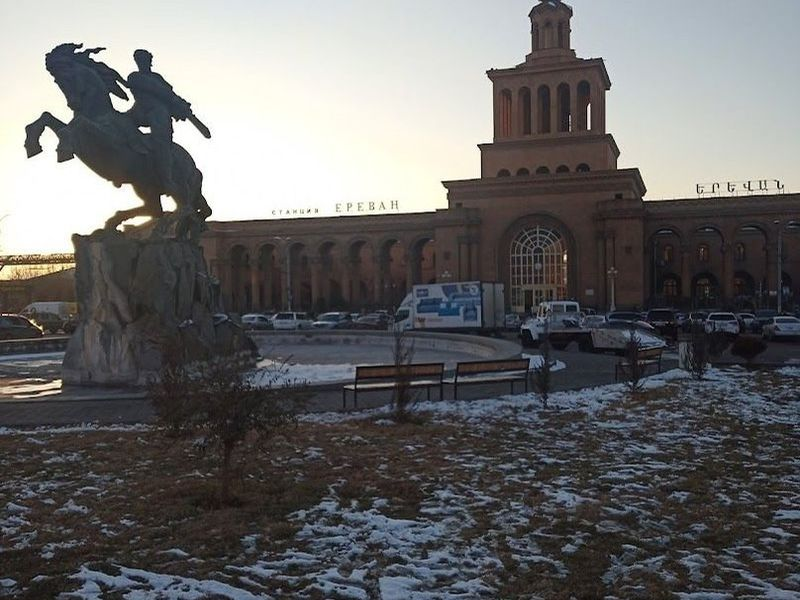
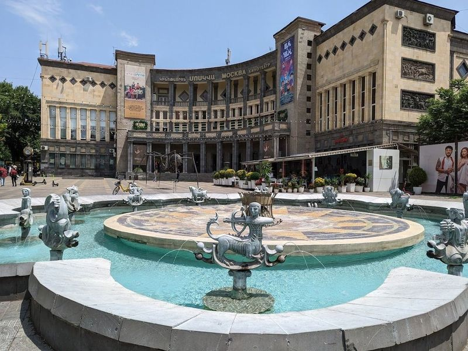
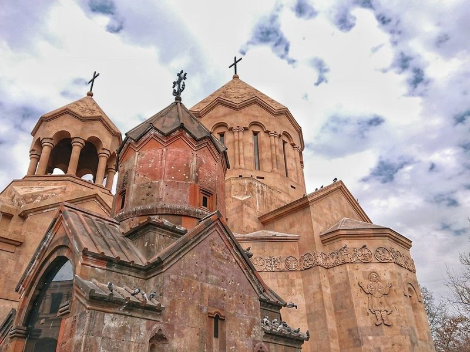
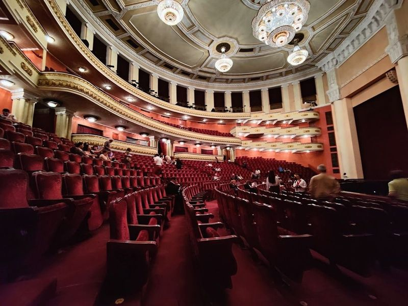
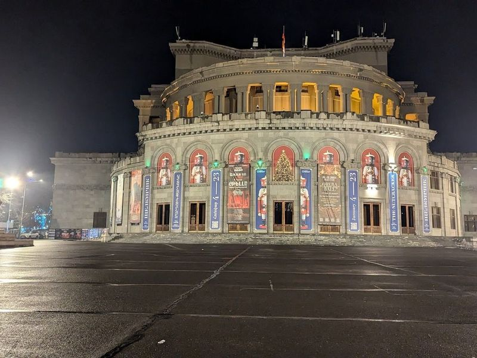
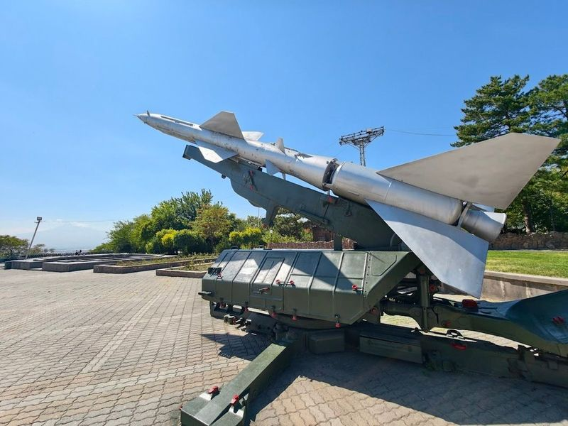
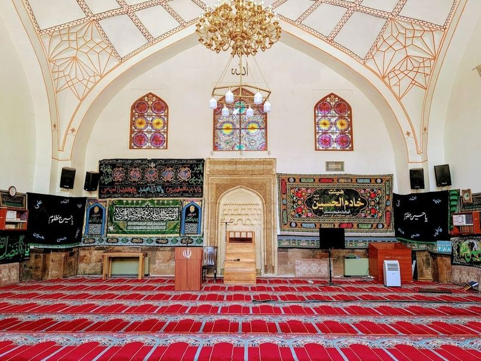

Explore Yerevan
A Brief History
Yerevan's recorded settlement dates to the eighth century BCE on the Ararat plain. Russian and Soviet planning left wide boulevards and pink tuff apartment blocks, while medieval churches and the Cascade complex reflect Armenia's Christian heritage and post-Soviet cultural revival as national capital. Genocide memorial precincts and Ararat viewpoints extend pink-tuff boulevards across the volcanic plain.
Attractions Map
Top Sights & Activities

Republic Square
Republic Square, formerly known as Lenin Square, is a grand city square in Yerevan. It is a popular venue for public events and celebrations. The square features colorful and singing fountains that operate from mid-spring to fall, creating a atmosphere from 9 pm to 11:30 pm. Designed by neoclassical architect Alexander Tamanian, the square holds historical significance as it was originally named after Soviet leader Lenin and housed a statue of him until 1991.

Vernissage Market
The Vernissage Market in Yerevan is a renowned open-air street market offering a wide array of souvenirs, antiques, and local foods. Despite its name suggesting an upscale art gallery, the market features an eclectic mix of items including canvas paintings, national trinkets, Orthodox icons, coffee accessories, handicrafts, and antiques.

Saint Gregory The Illuminator Cathedral
Saint Gregory The Illuminator Cathedral, also known as St. George's Cathedral, is the largest Armenian Apostolic cathedral globally and the largest church in Yerevan, Armenia. It was consecrated in 2001 to commemorate the 1700th anniversary of Christianity being declared the state religion of Armenia. The cathedral was built on the initiative of Catholicos Vazgen and has been visited by Pope John Paul II.

Sasuntsi Davit Statue
In Yerevan, Armenia, stands the impressive Sasuntsi Davit Statue, a copper equestrian statue created by Yervand Kochar in 1959. This landmark depicts David of Sassoun, the protagonist of the Armenian national epic Daredevils of Sassoun. The idea to erect this statue emerged in the late 1930s and it has become a symbol of Armenian heritage and history.

Charles Aznavour Square
Charles Aznavour Square, named in honor of the renowned French Armenian singer, was established during the 10th anniversary celebrations of Armenian independence. The square is located on Abovyan street and features the Moscow Cinema and Yerevan Golden Tulip Hotel. It pays tribute to Aznavour's contributions to Armenia, including his charitable efforts following the 1988 earthquake. The central pool is adorned with 12 zodiac signs.

Holy Mother of God Katoghike Church
St. Astvatsatsin Kathoghike Church is the oldest surviving Catholic church in the city, boasting 13th-century cross-stones with inscriptions. The church has a rich history dating back to the Arsacid dynasty of Armenia, and it is located in the ancient city of Yerevan, surrounded by picturesque mountains.

Armenian National Opera and Ballet Theatre
The Armenian National Opera and Ballet Theatre, established in 1933, is a magnificent circular opera house located in Yerevan. It showcases an array of captivating opera and ballet performances, ranging from classical masterpieces to contemporary works. The theater's opulent design and grand interiors add to the allure of its concerts. Renowned for its talented artists and diverse repertoire, it attracts both local enthusiasts and international visitors.

Freedom Square
In downtown Yerevan, Freedom Square, also known as Liberty Square, is a bustling town square that forms part of the Yerevan Opera Theater complex. Situated between Swan Lake and Opera Park, it is bordered by four streets: Mashtots Avenue, Sayat Nova, Tumanyan Street, and Teryan Street. This area is surrounded by attractions such as the Yerevan State Puppet Theatre and the Arno Babajanyan Statue.

Mother Armenia Monument
The Mother Armenia Monument, a towering 51-meter statue located in Victory Park, Yerevan, is an enduring symbol of Armenia. Constructed in 1967 by sculptor Ara Harutyunyan, it offers panoramic views of the city and Mount Ararat on clear days. The monument also features a museum providing insight into Armenian history. Surrounded by a peaceful park, it's a must-visit for tourists seeking historical significance and vistas.

Blue Mosque
The Blue Mosque, built in the mid-1700s, stands out with its turquoise and yellow tiled dome and a serene garden. As the only remaining mosque in Yerevan, it holds significant historical and cultural value. Despite Armenia's predominantly Christian population, the country is tolerant of other faiths due to its multicultural background. The mosque serves as a reminder of Armenia's diverse influences from both east and west.